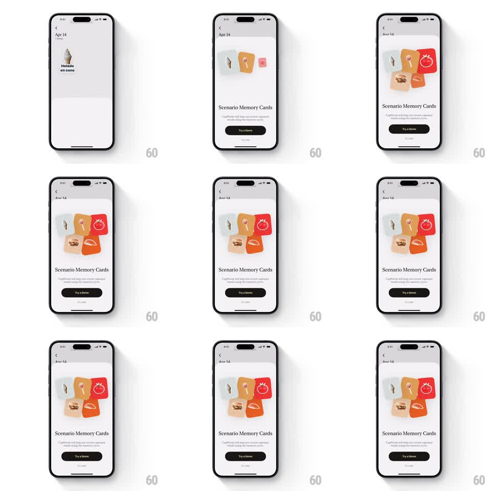

Media
Frame-by-frame

Rebuild this interaction 1:1: a feature bottom sheet ("Scenario Memory Cards") where illustrated memory cards pop in one by one with spring physics and assemble into a loose, rotated cluster above the sheet's title.

Rebuild this interaction 1:1: a feature bottom sheet ("Scenario Memory Cards") where illustrated memory cards pop in one by one with spring physics and assemble into a loose, rotated cluster above the sheet's title.
## Integration
Integration: stack-agnostic spec - springs given as stiffness/damping, timed motions as duration + curve; map every value to your framework and animation library of choice.
## Scene
Bottom sheet over a dimmed screen: illustration stage top (empty at first), sheet title, short description, primary CTA ("Try a Demo"), small skip link. The stage ends with 4-5 cards in a casual cluster: each rotated a few degrees, overlapping like cards on a table.
## Motion spec
Pattern: staggered spring entrance, fires when the sheet opens.
- Sheet slides up (spring ~300/26, ~400ms) and dims the background to 40%.
- Cards enter one at a time (120ms stagger): each scales 0.5 -> 1 with spring ~320/16 (visible overshoot), while rotating from 0deg to its final rest angle (-8deg..+10deg, fixed per card).
- Each card also drifts from the stage center outward to its cluster position during the same spring - so cards feel dealt, not placed.
- Title + description fade up (translateY 10 -> 0, 250ms) after the second card lands; CTA fades last (+120ms).
## Calibration
- Overshoot per card is generous (spring 320/16) - playful, not snappy.
- Rest rotations are fixed constants per card index; the looseness is designed, not random per run.
## Reduced motion
Sheet fades in with all cards in final positions (250ms).
## Don't miss
- Cards cast soft shadows on each other where they overlap - the stack has depth order.
- The first card reads alone for a beat before the rest arrive.